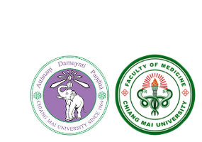

Dear all CMU IMC competitors,
Welcome to Chiang Mai University International Medical Challenge 2015 (CMU-IMC 2015) with this year’s topic: Basic to Clinical Biochemistry.
In order to make a world-wide connection among the medical students and the lecturers from medical schools all around the world, which leads to further career network in the future, this event will be the best chance for us to spend some time together, exchange some experiences and show the academic abilities throughout the competition.
On the 4-day-long CMU IMC 2015, the competitors will experience a memorable academic event held in the Faculty of Medicine, Chiang Mai University making it to be the center for knowledge, enjoyment, imagination and inspiration.
There is a statement once said, “There is no achievement without cooperation nor good cooperation without friendship.” We would be glad if CMU-IMC 2015 is the first step of a relationship which brings you love and unites us all.
We are looking forward to seeing you in Chiang Mai.
Sincerely,
President of Chiang Mai University International Medical Challenge 2015
